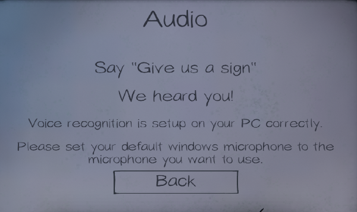

👻 Mute people deserve spooks too 👻
use is checked at the bottom rightchoose a 🎤 voice pack 🎤 below
Real Voices
Theodora(Female EN) Download zip
Text to Speech Voices
Geraint(Male EN) Download zip
Setup Voice Pack
Extract the zip file
Click add at the bottom left of the soundboard software
Find in the extracted folder
- Recommended: assign
/General Ghost Questions/giveusasign.wavfirst to test in the voice recognition menu in PhasmophobiaSet a hotkey
- I recommend having the
General Ghost Questionsbe 1-5 on your keyboard- the rest of the folders have ~5 voice lines so i recommend this pattern for each folder
ctrl-1, ctrl-2, ... ctrl-5,alt-1, alt-2, ... alt-5,shift-1, shift-2, ... shift-5Test in Phasmophobia with voice recognition menu
- Navigate to Options -> Audio -> Voice Recognition
- use the hotkey for giveusasign.wav
- 